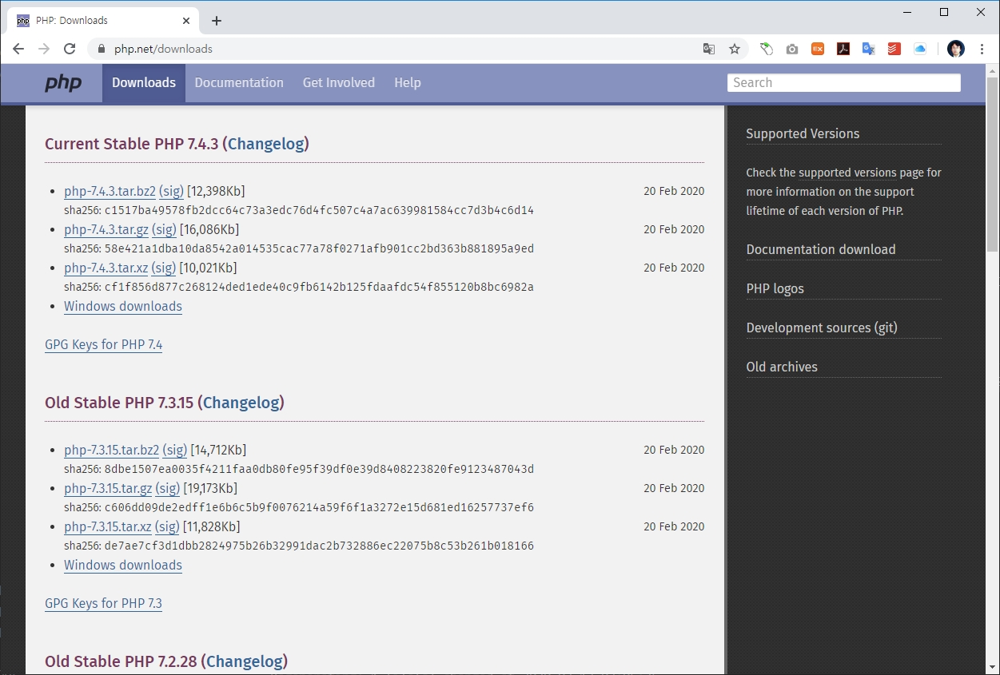

실행파일 다운로드
windows 운영체제는 개발자, 일반인등 다양한 사람들이 폭넓게 가장 많이 사용을 하고 있는 운영체제 입니다.
다운로드
php 공식사이트로 접속을 합니다. downloads를 클릭하여 다운로드 화면으로 이동을 합니다.

페이지 상단에는 최신 버젼의 php 파일을 다운로드 받을 수 있는 링크들이 모여 있습니다.
목록에서 windows downloads를 클릭합니다. 컴퓨터로 실행용 zip파일이 다운로드 됩니다.
압축풀기
php zip 설치파일을 다운로드 받았다면, 적절한 폴더에 압축을 해제합니다.
압축을 해제하기 위해서는 별도의 압축 응용프로그램이 필요할 수 있습니다.
압축을 해제하였다면, 폴더의 파일을 확인합니다. cmd 창에서 dir 명령을 사용하면 됩니다.
D:\php\php-7.4.0>dir/w
[.] [..] deplister.exe [dev]
[ext] [extras] glib-2.dll gmodule-2.dll
icudt65.dll icuin65.dll icuio65.dll icuuc65.dll
[lib] libcrypto-1_1-x64.dll libenchant.dll libpq.dll
libsasl.dll libsodium.dll libsqlite3.dll libssh2.dll
libssl-1_1-x64.dll license.txt news.txt nghttp2.dll
phar.phar.bat pharcommand.phar php-cgi.exe php-win.exe
php.exe php.ini-development php.ini-production php7.dll
php7embed.lib php7phpdbg.dll phpdbg.exe readme-redist-bins.txt
README.md [sasl2] snapshot.txt
32개 파일 51,980,199 바이트
7개 디렉터리 946,800,377,856 바이트 남음
폴더안에 php.exe 파일을 찾아 볼 수 있습니다.
PHP 실행하기
윈도우에서 압축을 해제한 PHP 파일들은 별도의 설치과정 없이 바로 실행이 가능합니다.
php를 실행해 보도록 합니다. 이때, php.exe 파일이 위치한 동일한 디렉토리에서 명령을 입력합니다.
php 명령뒤에 --version 옵션을 같이 입력합니다. --version 옵션은 현재의 php 버전정보를 출력합니다.
D:\php\php-7.4.0>php --version
PHP 7.4.0 (cli) (built: Nov 27 2019 10:13:59) ( NTS Visual C++ 2017 x64 )
Copyright (c) The PHP Group
Zend Engine v3.4.0, Copyright (c) Zend Technologies
정상적으로 PHP가 실행이 되는 것을 확인할 수 있습니다.
path 설정
설치된 php는 압축 해제된 디렉토리에서만 실행이 됩니다. 컴퓨터의 모든 폴더에서 php를 실행을 하기 위해서는 시스템 path 설정을 해주어야 합니다.
- 윈도우 > 설정 > 시스템